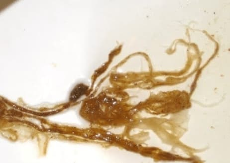
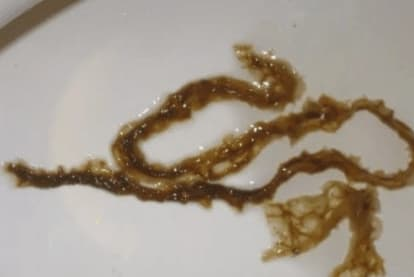

AVERTISMENTE DE LA MINISTERUL SĂNĂTĂȚII: În România, 300.000 de oameni mor anual din cauza paraziților! 97% DINTRE OAMENI AU FĂCUT-O! CUM SĂ TRATĂM CU ACEȘTI "UCIGAȘI", CONFORM CELUI MAI MARE PARAZITOLOG DIN ȚARĂ!
Lazar Lidia Elena
Prof. dr. de medicină - șef al
Institutului de Cercetare în Parazitologie Medicală și Medicină Tropicală.
Mai mult de 60 de articole științifice privind parazitologia moleculară.
Contractant responsabil pentru 11 contracte de achiziții publice cu Ministerul
Sănătății în cadrul programului "Securitate chimică și
biologică", contractant pentru proiectele INTAS în domeniul
diagnosticului molecular al leishmaniozei.
41 de ani de experiență profesională.
Potrivit celor mai recente date ale OMS, paraziții din corpul uman sunt cei care provoacă majoritatea bolilor mortale. Începând cu hepatita și ulcerul gastric și terminând cu cancerul. În România, 300.000 de oameni mor în fiecare an din cauza paraziților!
Astăzi vom vorbi despre aceasta cu șefa Institutului de Parazitologie, doamna Lazar Lidia Elena.
- Bună dimineața, doamnă Elena! Cât de adevărate sunt datele OMS privind infestarea cu paraziți?
- În urmă cu câțiva ani, în rândul specialiștilor exista convingerea că paraziții nu pot decât să slăbească sistemul imunitar. Nu se credea că acestea sunt cauza principală a bolii. Astăzi, colectăm în mod constant date statistice în acest domeniu și facem cercetări în acest domeniu și devine din ce în ce mai clar că infestarea cu paraziți provoacă cele mai multe boli grave.
Personal, am încredere în statisticile Organizației Mondiale a Sănătății și pot spune că cercetările pe care le efectuăm în institutul nostru le confirmă. Aproximativ 92% din decese se datorează infecțiilor parazitare. Nu este vorba doar de decese cauzate de boli. Marea majoritate a așa-numitelor "morți naturale" sunt rezultatul direct al prezenței paraziților în organism.
În general, la capitolul paraziți, ne referim de obicei la viermii intestinali. Cum este posibil ca acestea să ducă la moartea unei persoane?
Este o greșeală să credem că singurii paraziți care pot locui în corpul uman sunt viermii intestinali. Există o mulțime de specii diferite de paraziți care trăiesc în diferite organe. Și acestea duc la consecințe diferite. Viermii intestinali, sau mai exact helminții, sunt foarte periculoși. Acestea distrug literalmente intestinele, ducând la descompunere și, în cele din urmă, la moarte. Și, apropo, helminții sunt greu de detectat și de distrus.
În afară de aceștia, există mii de paraziți care pot trăi în ficat, creier, plămâni, sânge și stomac. Și aproape toate sunt mortale. Unele dintre ele încep agresiv și distrug organismul încă de la început. Unele dintre ele acționează discret din când în când, până când ajung la un număr atât de mare încât organismul purtător nu mai poate tolera prezența lor și persoana moare.
În același timp, pot spune cu certitudine că aproape toți sunt infectați cu paraziți. Doar că cele mai multe dintre ele sunt foarte greu de detectat. Atunci când apar primele simptome ale infestării cu paraziți, specialiștii încearcă să trateze ei înșiși simptomele. Chiar și în timpul unei autopsii, sunt necesare teste speciale pentru a detecta paraziții. Cel puțin pentru a le identifica pe cele mai multe dintre ele.
Sunt mii de paraziți care pot trăi în ficat, creier, plămâni, sânge și stomac. Și aproape toate sunt mortale.
- Ați putea da câteva exemple concrete de infestare cu paraziți?
- Vă pot povesti sute de cazuri. Dar aș dori să discut mai întâi despre cele care prezintă cel mai bine întregul pericol al paraziților.
În primul rând, s-a constatat că unele tenii provoacă cancer. Nu omul însuși este cel care este infectat în mod oficial, adică viermii. Dar celulele canceroase ale acestora se răspândesc în tot corpul și astfel infectează oamenii. Acest lucru se întâmplă atunci când larvele de viermi pătrund în ganglionii limfatici umani din intestine. În cele din urmă, acestea se transformă în celule canceroase care infectează rapid oamenii. Moartea are loc, la propriu, în câteva luni. Săptămâna trecută a fost înregistrat încă un caz de deces uman din cauza unor astfel de tumori.
În centrul acestei imagini: celule tumorale maligne transmise la om prin intermediul unui vierme parazit.
Un alt caz caracteristic: infecția cu paraziți în creierul uman. Acest lucru duce la nevroză, oboseală, supraexcitabilitate și schimbări bruște de dispoziție. Iar într-un stadiu ulterior, pe măsură ce creierul se umple de paraziți, acesta dezvoltă boli mai grave care duc în cele din urmă la moarte.
Păstrăm o arhivă fotografică a autopsiilor în care au fost detectați paraziți de organe. Iată câteva imagini, dar aveți grijă, sunt îngrozitoare.
Viermi în vezica biliară umană îndepărtată:
Paraziții din creierul uman care au provocat o tumoare
canceroasă:
Viermi ai inimii care au dus la stop cardiac:
Al treilea exemplu - infecția cu paraziți ai inimii umane. Se crede că este o boală foarte rară. De fapt, un număr variabil de viermi ai inimii sunt prezenți la aproximativ 23% dintre oameni. Deci sunt practic în fiecare a patra persoană. Într-un stadiu incipient, ele sunt complet invizibile, iar impactul lor asupra organismului este limitat la zero. Dar cu cât trece mai mult timp, cu atât devine mai vizibilă activitatea viermilor în inima umană. Aceștia sunt cauza multor boli de inimă, iar atunci când vine vorba de moartea cardiacă subită, proporția acestor paraziți reprezintă aproape 100% din aceste cazuri.
- Ce altceva este o infecție parazitară periculoasă?
La bărbați, paraziții provoacă: prostatită, impotență, adenom, cistită, nisip, pietre
la rinichi și la vezica urinară.
La femei: durere și inflamație a ovarelor. Se
dezvoltă fibroame, mastopatie fibroasă, inflamație a glandelor suprarenale, a
vezicii urinare și a rinichilor. Și, bineînțeles, se produce
îmbătrânirea prematură a pielii, apar riduri, pungi sub ochi, veruci și
papiloame pe față și pe corp.
- Cum să vă protejați de paraziți? Există teste, medicamente?
- Din păcate, se poate spune că în prezent nu există instrumente cu adevărat precise pentru a diagnostica paraziții la om. Acest lucru se datorează, pe de o parte, prezenței unui număr mare de specii de paraziți (peste 2.000 de specii cunoscute de noi) și, pe de altă parte, unui nivel foarte ridicat de dificultate în detectarea acestora. Procedura pentru o analiză completă a paraziților în România este literalmente disponibilă în mai multe locuri și costă o mulțime de bani.
Printre primele simptome care pot indica prezența paraziților în organism se numără:
- Miros neplăcut din gură;
- Alergii (erupții cutanate, ochi înlăcrimați, nas care curge);
- Erupții cutanate și roșeață;
- Răceli frecvente, dureri de gât, congestie nazală;
- Oboseală cronică ("obosiți rapid, indiferent de ceea ce faceți");
- Dureri de cap frecvente;
- Constipație sau diaree;
- Dureri articulare și musculare;
- Nervozitate, tulburări de somn și de apetit;
- Cearcănele, pungi sub ochi.
Dacă vă confruntați cu cel puțin unul dintre simptome, cu o probabilitate de 99%, puteți spune că paraziții se hrănesc în corpul dumneavoastră. Și trebuie să luptăm urgent împotriva lor!
În ceea ce privește mass-media, totul este problematic. Până în prezent, există un singur preparat care vă permite să scăpați de paraziți. Care, apropo, a fost făcută în România.
- Ce este acest produs și cine l-a dezvoltat? Puteți să-mi spuneți mai multe despre el?
Este un preparat antiparazitar "", care a fost creat cu participarea Institutului nostru de Parazitologie și a unui grup de tineri cercetători independenți. În același timp, lucrăm în aproximativ cu 20 produse împotriva paraziților. Dar, în cursul dezvoltării, s-a dovedit că a fost "" care curăță eficient organismul de paraziți.
este o combinație unică de Syzygium aromaticum, clinopodium vulgare, juglans, artemisia annua. În prezent, aceasta este cu adevărat singura dezvoltare eficientă. Dacă obiectivul principal al acestor activități ar fi să se concentreze pe profit, preparatul produs ar fi exportat. În Occident, aceștia sunt dispuși să cumpere la aproape orice preț. Dar avem un ordin de la dumneavoastră, conform căruia o cantitate semnificativă de preparat trebuie să rămână în țară și să fie vândută cetățenilor.
În plus, marja de export pentru cumpărătorii occidentali ( este vândut în străinătate la un preț de zece ori mai mare decât valoarea sa) ne permite să îl vindem pe piața internă la prețuri cu mult sub valoarea normală stabilită.
- De ce este atât de bun? Se deosebește de alte opțiuni de deparazitare?
- Așa cum am spus, este singurul remediu eficient pentru a curăța organismul de paraziți. Acesta este motivul pentru care lanțurile internaționale de farmacii și companiile farmaceutice sunt atât de interesate de el. Comparativ cu alte preparate antiparazitare, acest preparat acționează imediat împotriva întregului spectru de paraziți care pot fi prezenți în corpul uman. Am menționat mai devreme că este aproape imposibil de detectat cu ce paraziți este infectată o persoană. distruge și elimină paraziții care trăiesc peste tot, de la creier și inimă până la ficat și intestine. Niciuna dintre formulările existente nu poate face acest lucru.
Mai mult decât atât, nu este un preparat chimic, ci un produs complet natural care exclude o reacție alergică, tulburări intestinale și alte probleme care rezultă din tratamentul cu pilule clasice, care, în plus față de rezultat, supraîncarcă, de asemenea, organismul, provocând procesarea a numeroși compuși chimici diferiți. .
Acestea sunt rezultatele oficiale ale testului al Institutului de Parazitologie Medicală și Medicină Tropicală.
1. Eficacitatea , calculată conform metodologiei standard
(numărul de pacienți vindecați din numărul total de pacienți din grupul
de 100 tratați), a fost:
- Eliminarea viermilor și a ouălor -
94,5%.
- Normalizarea funcției și a stării pancreatice - 80%.
-
Eliminarea dermatitei alergice - 90%.
- Eliminarea gastritei, a
ulcerelor, a diareei - 90%.
- Eliminarea anemiei - 92,4%.
-
Eliminarea respirației urât mirositoare - 97,2%.
În acest caz, vindecarea înseamnă
eliminarea paraziților și a bolilor asociate, precum și absența
recidivei în termen de 6 luni.
2. Nu a fost
detectată apariția efectelor secundare, inclusiv a reacțiilor
alergice.
3. este recunoscut ca fiind principalul
preparat în lupta împotriva paraziților din corpul
uman.
- Cred că cititorii noștri vor fi interesați să afle de unde se poate cumpăra .
- În acest moment, este disponibil pentru a fi comandat doar în cadrul tombolei oficiale. . Am încercat de mai multe ori să negociem cu lanțurile de farmacii, dar acestea vor să stabilească cea mai mare marjă posibilă pentru și să-l vândă de câteva ori mai scump decât ne dorim noi. Uitați, Institutul de Parazitologie este o organizație necomercială. Nu o vindem în scop de profit. Vrem doar ca această formulă să fie disponibilă pentru toată lumea. Prin urmare, vindem în pierdere, compensând diferența prin exporturi. Iar principalul obiectiv al lanțurilor de farmacii este de a face bani. Prin urmare, avem abordări radical diferite în ceea ce privește stabilirea prețurilor.
Sperăm că într-o zi vom ajunge la un acord și va fi disponibil și în lanțurile de farmacii. Deocamdată, acesta poate fi comandat doar online, în cadrul tombolei oficiale. Încercăm să păstrăm totul simplu și convenabil, pregătirea este livrată prin poștă sau curierat, plata numai după primire și verificare. Nu trebuie să faceți nicio mișcare inutilă.
- Doamnă Lazar Lidia Elena, poate ați dori să le spuneți ceva cititorilor noștri înainte de a încheia interviul?
- Tot ce vreau să vă spun este să aveți grijă de sănătatea dumneavoastră. Poate că nici măcar nu bănuiți, dar există 97-98% șanse ca paraziții să trăiască în interiorul dumneavoastră. Ele pot fi oriunde, în sânge, în plămâni, în inimă, în creier. Paraziții vă mănâncă literalmente din interior spre exterior pe măsură ce vă otrăvesc corpul. În cele din urmă, apar numeroase probleme de sănătate care scurtează speranța de viață cu 15 până la 25 de ani. Ca să nu mai vorbim de problema morților subite, care sunt, de asemenea, adesea asociate cu efectele paraziților din organism.
În prezent, produsul original poate fi comandat prin tombola oficială .
Până când 20.01.2023 Institutul de Parazitologie, în colaborare cu Ministerul Sănătății, derulează acțiunea "Curățăm de paraziți municipiul", în cadrul căreia produsul este disponibil la un preț promoțional pentru toți locuitorii orașului și provinciei!


